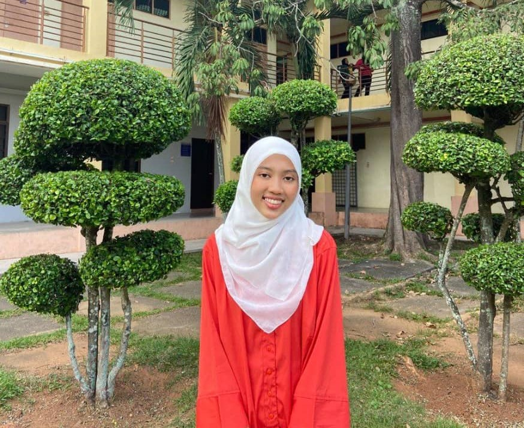
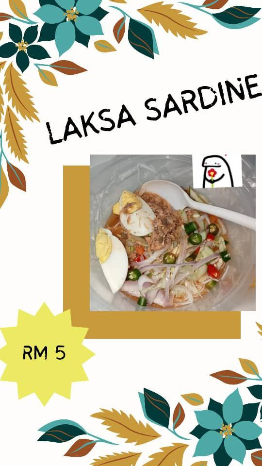
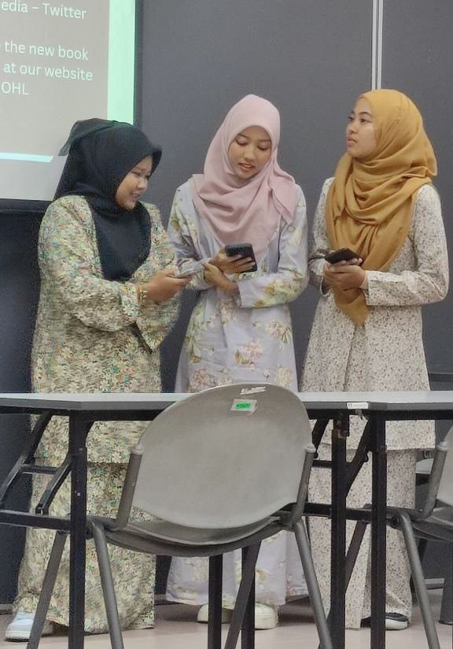
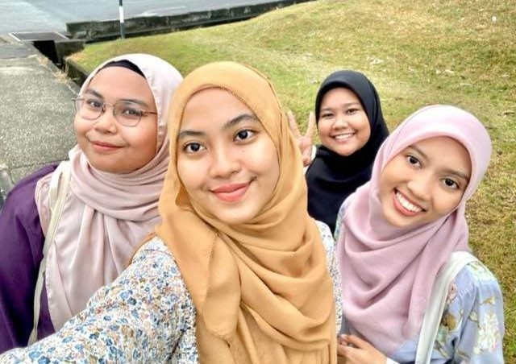
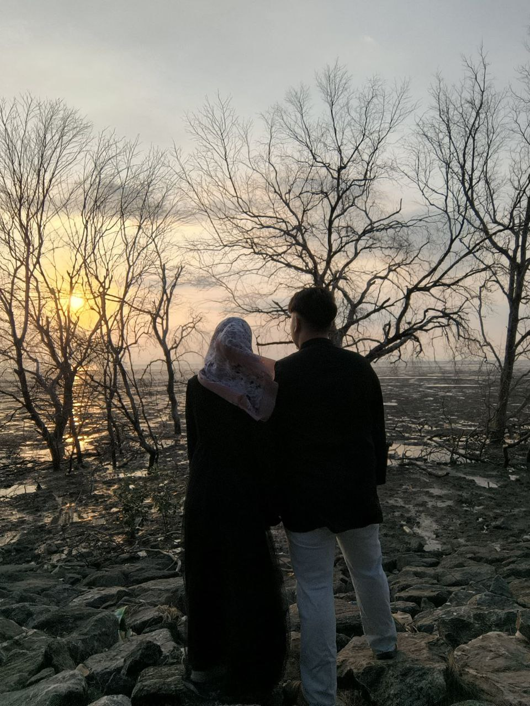
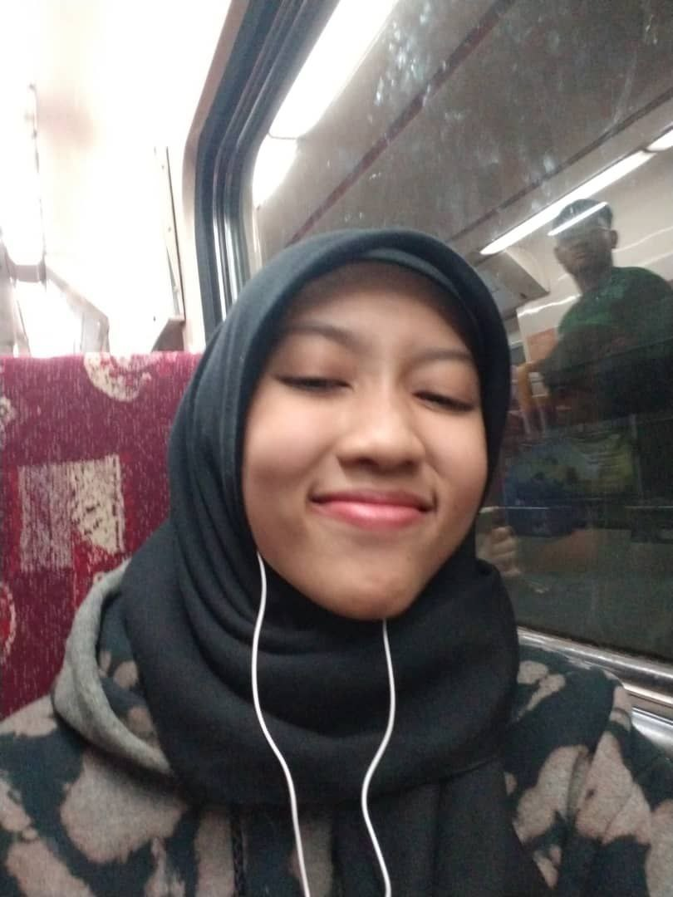

Now I have been continuing my degree since October. Now I'm in semester 2 of my Bachelor of Library Management.
My quote for myself now is, “Work hard, study smart”. This is because I was studying but I'm also working. At my first sem, I work with Masmed by selling food. The food that I sell is the food that I cook by myself. My food name is ‘Laksa Sardin’. Laksa Sardin is my family tradisional food, it called laksa sardin but it's not laksa, it's ‘bihun’.

And this current semester, I'm doing part-time whenever I don't have class. Part-time such as doing service at university and taking care of the shop when I'm in free time.
I said study smart because even though I’m working, I still know how to manage my time to study and do my assignments properly.

I once made a new friend at my university, for the first time I met them was when I was hoping to share a grab to go back to Perlis on the weekend. But at that time we don't know that we are classmates. When we all arrived at our destination, we started to know each other and I never thought that they were my classmates. We are fours, we share a lot of memories from when we at semester 1. But now we are not friends anymore.

I lost them because I didn't know what I did, they ignored me so I cut my friendship with them. So now I can declare that I'm alone but I am friends with my classmates some random people and my ex-roommate.
By the way, I had a bestie that I was friends from my high school. I and her still being friends until now.
In my current life, I have a boyfriend, his name is Hamizan Iman, we both live in Perlis, he studies environmental engineering, and he is older 3 years than me. He is a nice guy and made a great effort to treat me like a princess. But I don't have any feelings with him, he is just lucky that he got my mom's heart. My mom really likes him because he is a nice guy. So I just accepted him and tried my best to have feelings like he did.

My message for adults me, just don't give up for any reason, you must go through it again even if it becomes bad and you think you can't do it, but actually you can do it, u are such a strong person who has endurance a lot of things, so never give up, just believe everything it just about time, sometimes I might feel hard, but sometimes I will just okey and you will feel happier.
